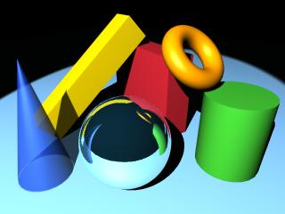

Per al càlcul del color d'un punt Q que pertany a una superfície S, els models de traçat de raig consideren els focus de llum puntuals que hi hagi a l'escena, la ubicació del punt Q, les característiques de la superfície a la que pertany el punt i la resta d'objectes de l'escena. Aquests poden bé aportar llum incident al punt Q però només mitjançant transmissions/reflexions especulars pures, o bé obstaculitzar part de la llum incident. Permeten, doncs, simular ombres, transparències i miralls. Aquest model d'il·luminació es classifica com global donat que en el càlcul del color d'un punt Q consideren la globalitat de l'escena. Són més costosos de càlcul i en general van associats a algorismes de determinació de visibilitat de ray-casting.
|  |